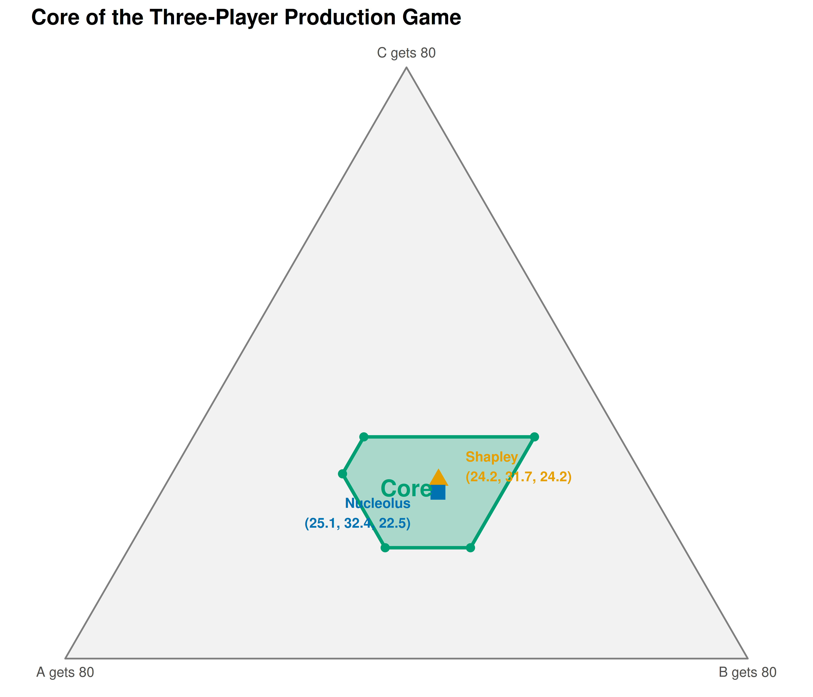

12 The CoopGame Package
A conceptual survey of the CoopGame R package for transferable utility games, followed by from-scratch implementations of the characteristic function, core computation via linear constraints, and the nucleolus, with a three-player production game worked example and simplex visualization.
Learning objectives
- Describe the features of the CoopGame R package for transferable utility (TU) games.
- Represent cooperative games via a characteristic function vector using binary coalition encoding.
- Compute the core of a three-player game by setting up linear inequality constraints in base R.
- Understand the nucleolus as the allocation minimizing maximum coalition dissatisfaction.
- Visualize the core as a feasible region on a simplex plot using ggplot2.
12.1 Motivation
Imagine three firms that each control a different resource needed for production: Firm A owns raw materials, Firm B operates a factory, and Firm C manages the distribution network. Any single firm can earn a modest profit alone, pairs can do better by combining capabilities, and the grand coalition of all three generates the highest total profit. How should they divide the surplus?
This is a transferable utility (TU) cooperative game, and the central question is which allocations are stable — meaning no subgroup would prefer to break away. The set of all stable allocations is the core. The nucleolus refines this further by selecting the unique allocation that minimizes worst-case dissatisfaction.
The CoopGame package on CRAN provides a comprehensive toolkit for these problems: characteristic function encoding, solution concepts (Shapley value, nucleolus, tau-value), property checks (superadditivity, convexity, balancedness), and — most distinctively — core visualization on the simplex for three-player games. Since it is not installed, this chapter describes its API and implements the key algorithms from scratch.
12.2 Theory
12.2.1 Characteristic function representation
A TU game with \(n\) players is defined by \(v : 2^N \to \mathbb{R}\) with \(v(\emptyset) = 0\). The CoopGame package stores \(v\) as a vector of length \(2^n - 1\), ordered by binary encoding:
\[\begin{equation} \text{index}(S) = \sum_{i \in S} 2^{i-1} \tag{12.1} \end{equation}\]
For players \(\{1, 2, 3\}\): index \(1 = \{1\}\), \(2 = \{2\}\), \(3 = \{1,2\}\), \(4 = \{3\}\), \(5 = \{1,3\}\), \(6 = \{2,3\}\), \(7 = \{1,2,3\}\).
12.2.2 The core
Definition: Core
The core of a TU game \((N, v)\) is the set of allocations satisfying efficiency and coalition rationality:
\[\begin{equation} \text{Core}(v) = \left\{ x \in \mathbb{R}^n : \sum_{i=1}^n x_i = v(N), \; \sum_{i \in S} x_i \geq v(S) \;\forall\, S \subset N \right\} \tag{9.1} \end{equation}\]
The core may be empty, a single point, or a convex polytope. The Bondareva-Shapley theorem states that the core is non-empty if and only if the game is balanced.
12.2.3 The nucleolus
The nucleolus (Schmeidler, 1969) selects the allocation that lexicographically minimizes the sorted vector of excesses:
\[\begin{equation} e(S, x) = v(S) - \sum_{i \in S} x_i \tag{12.2} \end{equation}\]
A positive excess means coalition \(S\) is underpaid. The nucleolus solves:
\[\begin{equation} \text{nuc}(v) = \arg\min_{x \in \mathcal{I}} \theta(x) \tag{12.3} \end{equation}\]
where \(\theta(x)\) is the vector of excesses sorted in decreasing order. It always exists, is unique, and lies in the core when the core is non-empty.
12.2.4 The CoopGame package API
The CoopGame package provides: createGame() for defining games; coreVertices() and drawCorePlot() for core computation and visualization; nucleolus() and shapleyValue() for solution concepts; and isConvexGame(), isSuperadditiveGame(), isBalancedGame() for property checking. We now implement these from scratch.
12.3 Implementation in R
12.3.1 Coalition encoding and game definition
# Convert player set to coalition index (binary encoding)
coalition_idx <- function(members, n) sum(2^(members - 1))
# Convert index back to player set
idx_to_players <- function(idx, n) which(as.logical(intToBits(idx)[1:n]))
# Generate all non-empty coalitions
all_coalitions <- function(n) {
lapply(1:(2^n - 1), function(k) idx_to_players(k, n))
}
# Three-player production game
# A (materials), B (factory), C (distribution)
# Index: 1={A}, 2={B}, 3={A,B}, 4={C}, 5={A,C}, 6={B,C}, 7={A,B,C}
v_prod <- c(10, 20, 50, 15, 40, 45, 80)
names(v_prod) <- c("{A}", "{B}", "{A,B}", "{C}", "{A,C}", "{B,C}", "{A,B,C}")
cat("Production game characteristic function:\n")#> Production game characteristic function:
print(v_prod)#> {A} {B} {A,B} {C} {A,C} {B,C} {A,B,C}
#> 10 20 50 15 40 45 80#>
#> Surplus from cooperation: 80 - 45 = 3512.3.2 Computing the core via linear constraints
For three players with efficiency \(x_A + x_B + x_C = 80\), substituting \(x_C = 80 - x_A - x_B\) reduces the core to a 2D feasibility problem:
# After substitution, the six constraints are:
# x_A >= 10, x_B >= 20, x_A + x_B <= 65 (from x_C >= 15)
# x_A + x_B >= 50, x_B <= 40 (from x_A + x_C >= 40), x_A <= 35
core_constraints <- tribble(
~constraint, ~description,
"x_A >= 10", "A individual rationality",
"x_B >= 20", "B individual rationality",
"x_A + x_B <= 65", "C individual rationality",
"x_A + x_B >= 50", "AB coalition rationality",
"x_B <= 40", "AC coalition rationality",
"x_A <= 35", "BC coalition rationality"
)
core_constraints |>
gt() |>
tab_header(title = "Core Constraints (after efficiency substitution)") |>
cols_align(align = "center")| Core Constraints (after efficiency substitution) | |
| constraint | description |
|---|---|
| x_A >= 10 | A individual rationality |
| x_B >= 20 | B individual rationality |
| x_A + x_B <= 65 | C individual rationality |
| x_A + x_B >= 50 | AB coalition rationality |
| x_B <= 40 | AC coalition rationality |
| x_A <= 35 | BC coalition rationality |
12.3.3 Finding core vertices
# Find vertices by intersecting all pairs of boundary lines
boundary_intersections <- function() {
bounds <- list(c(1,0,10), c(0,1,20), c(1,1,65),
c(1,1,50), c(0,1,40), c(1,0,35))
vertices <- tibble(x_A = numeric(), x_B = numeric(), x_C = numeric())
for (i in 1:(length(bounds) - 1)) {
for (j in (i + 1):length(bounds)) {
A_mat <- matrix(c(bounds[[i]][1:2], bounds[[j]][1:2]),
nrow = 2, byrow = TRUE)
b_vec <- c(bounds[[i]][3], bounds[[j]][3])
if (abs(det(A_mat)) < 1e-10) next
sol <- solve(A_mat, b_vec)
xa <- sol[1]; xb <- sol[2]; xc <- 80 - xa - xb
feasible <- (xa >= 10 - 1e-10) && (xb >= 20 - 1e-10) &&
(xa + xb <= 65 + 1e-10) && (xa + xb >= 50 - 1e-10) &&
(xb <= 40 + 1e-10) && (xa <= 35 + 1e-10)
if (feasible) {
vertices <- bind_rows(vertices,
tibble(x_A = round(xa, 2), x_B = round(xb, 2), x_C = round(xc, 2)))
}
}
}
distinct(vertices)
}
core_verts <- boundary_intersections()
core_verts |>
gt() |>
tab_header(title = "Vertices of the Core") |>
cols_align(align = "center")| Vertices of the Core | ||
| x_A | x_B | x_C |
|---|---|---|
| 10 | 40 | 30 |
| 30 | 20 | 30 |
| 35 | 20 | 25 |
| 25 | 40 | 15 |
| 35 | 30 | 15 |
12.3.4 Computing the nucleolus
# Compute excesses for all proper coalitions
compute_excesses <- function(x, v_vec, n) {
coalitions <- all_coalitions(n)
grand_idx <- 2^n - 1
exc <- numeric(0); nms <- character(0)
for (k in seq_along(coalitions)) {
if (k == grand_idx) next
S <- coalitions[[k]]
exc <- c(exc, v_vec[k] - sum(x[S]))
nms <- c(nms, paste(S, collapse = ","))
}
names(exc) <- nms
exc
}
# Nucleolus via grid search (tractable for 3 players)
find_nucleolus <- function(v_vec, n, grid_size = 300) {
grand_val <- v_vec[2^n - 1]
best_x <- NULL; best_theta <- Inf
xa_seq <- seq(10, 35, length.out = grid_size)
xb_seq <- seq(20, 40, length.out = grid_size)
for (xa in xa_seq) {
for (xb in xb_seq) {
xc <- grand_val - xa - xb
if (xc < 15 - 1e-10 || xa + xb < 50 - 1e-10 ||
xa + xb > 65 + 1e-10) next
max_exc <- max(compute_excesses(c(xa, xb, xc), v_vec, n))
if (max_exc < best_theta) {
best_theta <- max_exc; best_x <- c(xa, xb, xc)
}
}
}
names(best_x) <- c("A", "B", "C")
best_x
}
nuc <- find_nucleolus(v_prod, 3)
cat("Nucleolus (approximate):\n")#> Nucleolus (approximate):#> A: 25.05, B: 32.44, C: 22.51 (sum: 80.00)
cat("\nExcesses at the nucleolus:\n")#>
#> Excesses at the nucleolus:#> 1,2 3 1,3 2,3 2 1
#> -7.49 -7.51 -7.56 -9.95 -12.44 -15.0512.3.5 Shapley value and core visualization
# Shapley value via permutation enumeration
shapley_prod <- function() {
perms <- list(c(1,2,3), c(1,3,2), c(2,1,3),
c(2,3,1), c(3,1,2), c(3,2,1))
phi <- c(0, 0, 0)
get_v <- function(m) {
if (length(m) == 0) return(0)
v_prod[coalition_idx(m, 3)]
}
for (perm in perms) {
coal <- integer(0)
for (p in perm) {
v_before <- get_v(coal)
coal <- c(coal, p)
phi[p] <- phi[p] + (get_v(sort(coal)) - v_before)
}
}
phi / length(perms)
}
shap <- shapley_prod()
# Barycentric to Cartesian simplex coordinates
to_simplex <- function(xA, xB, xC) {
total <- xA + xB + xC
a <- xA / total; b <- xB / total; cc <- xC / total
tibble(x = b + cc / 2, y = cc * sqrt(3) / 2)
}
simplex_verts <- tibble(
label = c("A gets 80", "B gets 80", "C gets 80"),
x = c(0, 1, 0.5), y = c(0, 0, sqrt(3) / 2)
)
core_simplex <- map_dfr(seq_len(nrow(core_verts)), function(i) {
to_simplex(core_verts$x_A[i], core_verts$x_B[i], core_verts$x_C[i])
})
hull_order <- chull(core_simplex$x, core_simplex$y)
core_hull <- core_simplex[c(hull_order, hull_order[1]), ]
shap_pt <- to_simplex(shap[1], shap[2], shap[3])
nuc_pt <- to_simplex(nuc[1], nuc[2], nuc[3])
p_simplex <- ggplot() +
geom_polygon(data = simplex_verts, aes(x = x, y = y),
fill = "grey95", colour = "grey50", linewidth = 0.5) +
geom_polygon(data = core_hull, aes(x = x, y = y),
fill = okabe_ito[3], alpha = 0.3,
colour = okabe_ito[3], linewidth = 1) +
geom_point(data = core_simplex, aes(x = x, y = y),
colour = okabe_ito[3], size = 2) +
geom_point(data = shap_pt, aes(x = x, y = y),
colour = okabe_ito[1], size = 4, shape = 17) +
annotate("text", x = shap_pt$x + 0.04, y = shap_pt$y + 0.02,
label = sprintf("Shapley\n(%.1f, %.1f, %.1f)",
shap[1], shap[2], shap[3]),
colour = okabe_ito[1], size = 3, fontface = "bold", hjust = 0) +
geom_point(data = nuc_pt, aes(x = x, y = y),
colour = okabe_ito[5], size = 4, shape = 15) +
annotate("text", x = nuc_pt$x - 0.04, y = nuc_pt$y - 0.03,
label = sprintf("Nucleolus\n(%.1f, %.1f, %.1f)",
nuc[1], nuc[2], nuc[3]),
colour = okabe_ito[5], size = 3, fontface = "bold", hjust = 1) +
geom_text(data = simplex_verts, aes(x = x, y = y, label = label),
vjust = c(1.8, 1.8, -1), size = 3, colour = "grey30") +
annotate("text", x = 0.5, y = 0.25, label = "Core",
colour = okabe_ito[3], size = 5, fontface = "bold") +
coord_fixed() +
theme_publication() +
theme(axis.text = element_blank(), axis.title = element_blank(),
axis.ticks = element_blank(), panel.grid = element_blank()) +
labs(title = "Core of the Three-Player Production Game")
p_simplex
Figure 12.1: The core of the three-player production game (shaded polygon) within the efficiency simplex. The Shapley value (triangle) and nucleolus (square) both lie inside the core, confirming both solution concepts yield stable allocations.
save_pub_fig(p_simplex, "core-simplex", width = 7, height = 6)12.1 shows the core as a shaded polygon on the efficiency simplex. Every point inside represents a stable allocation where no coalition can profitably deviate. Both the Shapley value and nucleolus lie inside, confirming stability.
12.4 Worked example
12.4.1 Step-by-step core membership check
We verify which allocations are in the core by testing all constraints.
check_core <- function(x, v_vec, n, labels) {
grand <- v_vec[2^n - 1]
coalitions <- all_coalitions(n)
all_pass <- abs(sum(x) - grand) < 0.01
cat(sprintf("Efficiency: sum = %.2f -- %s\n",
sum(x), ifelse(all_pass, "PASS", "FAIL")))
for (k in 1:(2^n - 2)) {
S <- coalitions[[k]]
pass <- sum(x[S]) >= v_vec[k] - 0.01
if (!pass) all_pass <- FALSE
cat(sprintf(" v(%s) = %d, x(%s) = %.2f -- %s\n",
paste(labels[S], collapse = ","), v_vec[k],
paste(labels[S], collapse = ","), sum(x[S]),
ifelse(pass, "PASS", "FAIL")))
}
cat(sprintf("In core: %s\n\n", ifelse(all_pass, "YES", "NO")))
}
labels <- c("A", "B", "C")
equal <- rep(80 / 3, 3)
cat("=== Shapley value ===\n")#> === Shapley value ===
check_core(shap, v_prod, 3, labels)#> Efficiency: sum = 80.00 -- PASS
#> v(A) = 10, x(A) = 24.17 -- PASS
#> v(B) = 20, x(B) = 31.67 -- PASS
#> v(A,B) = 50, x(A,B) = 55.83 -- PASS
#> v(C) = 15, x(C) = 24.17 -- PASS
#> v(A,C) = 40, x(A,C) = 48.33 -- PASS
#> v(B,C) = 45, x(B,C) = 55.83 -- PASS
#> In core: YES
cat("=== Nucleolus ===\n")#> === Nucleolus ===
check_core(nuc, v_prod, 3, labels)#> Efficiency: sum = 80.00 -- PASS
#> v(A) = 10, x(A) = 25.05 -- PASS
#> v(B) = 20, x(B) = 32.44 -- PASS
#> v(A,B) = 50, x(A,B) = 57.49 -- PASS
#> v(C) = 15, x(C) = 22.51 -- PASS
#> v(A,C) = 40, x(A,C) = 47.56 -- PASS
#> v(B,C) = 45, x(B,C) = 54.95 -- PASS
#> In core: YES
cat("=== Equal division ===\n")#> === Equal division ===
check_core(equal, v_prod, 3, labels)#> Efficiency: sum = 80.00 -- PASS
#> v(A) = 10, x(A) = 26.67 -- PASS
#> v(B) = 20, x(B) = 26.67 -- PASS
#> v(A,B) = 50, x(A,B) = 53.33 -- PASS
#> v(C) = 15, x(C) = 26.67 -- PASS
#> v(A,C) = 40, x(A,C) = 53.33 -- PASS
#> v(B,C) = 45, x(B,C) = 53.33 -- PASS
#> In core: YESThe Shapley value and nucleolus pass all constraints. Equal division (\(\approx 26.67\) each) fails because \(x_B + x_C \approx 53.33 < 45\) is satisfied, but Firm B with only 26.67 would prefer to partner with C for 45 — the coalition rationality constraint \(x_A + x_B \geq 50\) is violated. This illustrates that simplistic “fair” divisions are often unstable.
Firm B receives the largest share under both solution concepts, reflecting its central role in the two most valuable pair coalitions (\(v(\{A,B\}) = 50\) and \(v(\{B,C\}) = 45\)). Firm A, despite the lowest stand-alone value, earns well above 10 because it generates substantial synergies with B.
12.5 Extensions
-
Linear programming for the nucleolus. Our grid-search works for three players but does not scale. The standard algorithm solves a sequence of LPs, minimizing the maximum excess at each stage. The
CoopGamepackage useslpSolvefor this. -
Game properties.
CoopGametests monotonicity, superadditivity, convexity, and balancedness. Convex games are particularly well-behaved: the core is always non-empty and the Shapley value lies within it. -
Additional solution concepts. Beyond Shapley and nucleolus,
CoopGamecomputes the tau-value, Gately point, per-capita nucleolus, and equal surplus division, each with different fairness properties. - Power indices. The Shapley value computation connects to 11, where we compute power indices for weighted voting games.
Exercises
Empty core. Consider a three-player game with \(v(\{i\}) = 0\) for all \(i\), \(v(\{i,j\}) = 1\) for all pairs, and \(v(\{1,2,3\}) = 1\). Show that the core is empty by demonstrating that the constraints in (9.1) are infeasible. What does this imply about the stability of the grand coalition?
Convexity check. Write a function that checks whether a game is convex (marginal contributions are non-decreasing). Test it on the production game. Is it convex? If not, find a player and pair of coalitions that violate the condition.
Shrinking the pie. Change the grand coalition value from 80 to 60, keeping all pair values the same. Recompute the core vertices. Does the core shrink, or does it become empty? If it becomes empty, explain which constraint(s) are violated and why the game becomes unbalanced.
Solutions appear in D.